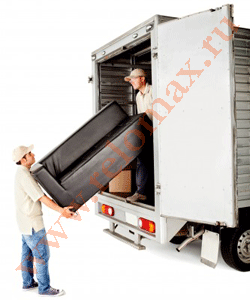

Мы готовы осуществить для вас перевозку по городу Уфе любого объема груза, начиная от одной коробки до полномасштабного переезда. К вашим услугам чистые и оборудованные, высокие тентованные, открытые, с верхней и боковой погрузкой грузовики, также опытные грузчики, упаковщики, сборщики мебели, стропальщики и такелажники. Вы можете приобрести у нас мягкую и жесткую упаковку, защитный материал.
- Перевозка штучных грузов, магазинного товара в небольших объемах.
- Развоз мебели, техники и прочего товара между магазинами либо по клиентам заказчика.
- Забор груза со склада транспортной компании или привоз обратно.
- Организация переезда офиса клиента либо домашних вещей его сотрудников между городами России.
- Перемещение и транспортировка тяжелых и негабаритных грузов с использованием спецтехники и такелажников.
- Помощь для частных лиц при переезде квартиры, частного дома, дачи.
- Вывоз ненужной мебели, отработанной техники и прочего хлама на свалку и утилизацию.
- Транспортировка антиквариата для реставрации.
- Разбор на части, подготовка, упаковка и перевозка мебели на склад длительного хранения.
- Перевозка личных вещей из Уфы в любой другой город России.
Неважен характер груза, важен опыт перевозчика. Наша трудовая деятельность начинается с 2005г. и насчитывает более тысячи довольных клиентов по всей России. Поэтому вы можете быть уверены в профессионализме сотрудников Урал-сервис.
Что мы перевозим:
- корпусную, встроенную либо массивную мебель любых габаритов, конструкций как в собранном виде, так и разобранном;
- кухонные гарнитуры, столешницы любых размеров;
- антикварную, элитную мебель;
- офисную, торговую, лабораторную, ресторанную, отельную мебель;
- металлическую мебель, бронированные двери;
- пианино, рояли, сейфы, банкоматы и другие тяжелые предметы;
- бытовая и офисная техника;
- вывоз ненужной мебели.
Можем вам доставить мебель не только по городу Уфа, но и в Уфимский район или в любое другое место страны. Сохранность имущества во время погрузки, транспортировки гарантируем. При необходимоти мебель разбирается на части и всегда упаковывается в прочную упаковку.
Помимо мебели, вы можете осуществить с нами перевозку личных вещей: одежда, обувь, бумажная литература, посуда, предметы интерьера, декоративные элементы, техника и различные бытовые вещи. Личные вещи мы также тщательно упаковываем для защиты от влаги и пыли. Обязательно маркеруем для удобства погрузки и распаковки.
Заказать перевозку мебели вы можете не только по асфальтированному городу, но и на дачу. Условия проезда, погода имеют значение и могут отразиться на конечной стоимости услуги. Хорошее время - солнечный день. Перевозка домашних вещей на дачу займет минимум времени c компанией Урал-Сервис.
Стоимость перевозки мебели в Уфе
Мы придерживаемся гибкой ценовой политики, в том числе на услуги перевозок мебели и личных вещей. Для вас мы найдем самое оптимальное решение переезда. Экономичные, но в тоже время вместительные фургоны, расходные материалы для упаковки. В этом году мы снизили цены на расходный материал на 20%.
Кроме того, у нас постоянно действуют специальные предложение на небольшие мебельные перевозки в Уфе и переезды, о наличии которых уточняйте у диспетчера. Также вам можно заказать отдельно услуги грузчиков или отдельно фургон для грузоперевозки мебели, вещей, техники.